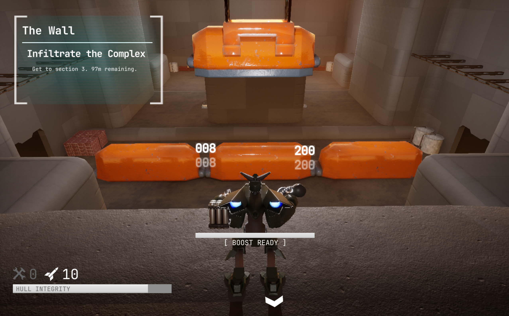
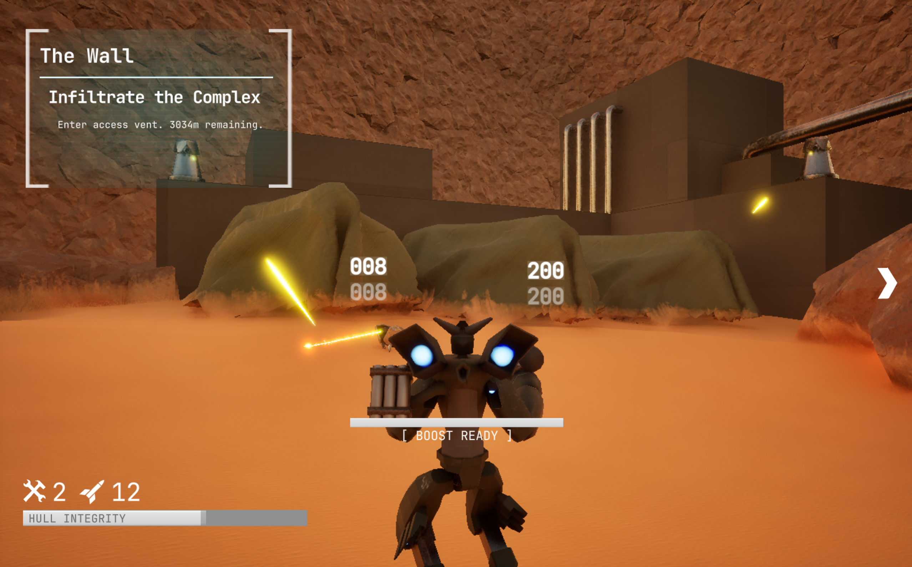

Project Overview
S.O.R.N. is a third-person mech action game developed as a large-scale team passion project. The core design philosophy emphasizes mechanical clarity, player expression through high-mobility traversal, and modular technical architecture. Built within Unreal Engine 5, the project required a robust foundation to support complex networked interactions and fast-paced combat encounters.
Core Gameplay Systems
Mech Movement & State Logic
I helped engineer a high-mobility traversal system supporting boosts, strafing, and rapid directional changes. By utilizing a custom movement state handler in C++, I ensured the mech remained responsive during intense combat while maintaining multiplayer synchronization across the Listen Server architecture.
Lock-On Combat Flow
To support mechanical precision and readability, I developed a target-locking system. This component manages target acquisition, weapon accuracy modifiers, and consistent camera framing, allowing for fluid encounters that feel both powerful and controlled.

Mission Architecture: Networked objective points and indoor mission flow logic.

Combat Readability: Testing lock-on framing and networked turret interactions.
Technical Contributions
Mission & Objective Systems
I helped intigrate a data-driven mission logic system that allowed for dynamic objective chaining. This framework supports sabotage missions, defensive encounters, and extraction phases, all synchronized via a gameplay bus to ensure a consistent experience for all players in a session.
Modular Gameplay Architecture
Modularity was critical for a 15-person team. I implemented component-based systems for combat and movement, enabling parallel development. This allowed artists and designers to tune Blueprint variables and mission parameters without interfering with the core C++ systems, significantly speeding up iteration cycles.
Multiplayer Dialogue System
I created a dialogue system that corresponds directly to the mission state logic. It features multiplayer functionality, ensuring that narrative triggers and mission-critical information are broadcasted correctly to all clients during live gameplay.